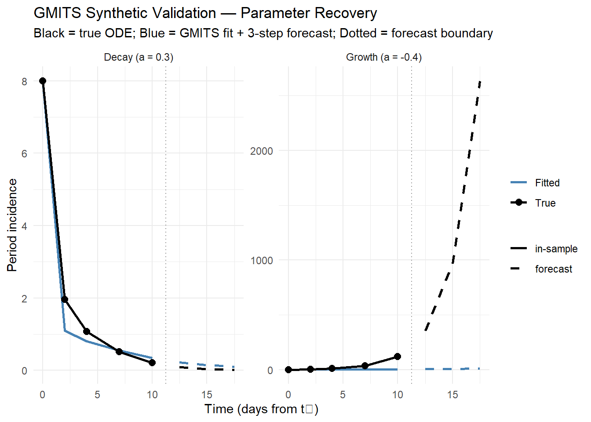
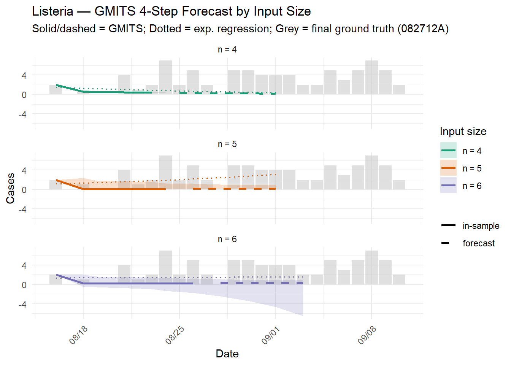
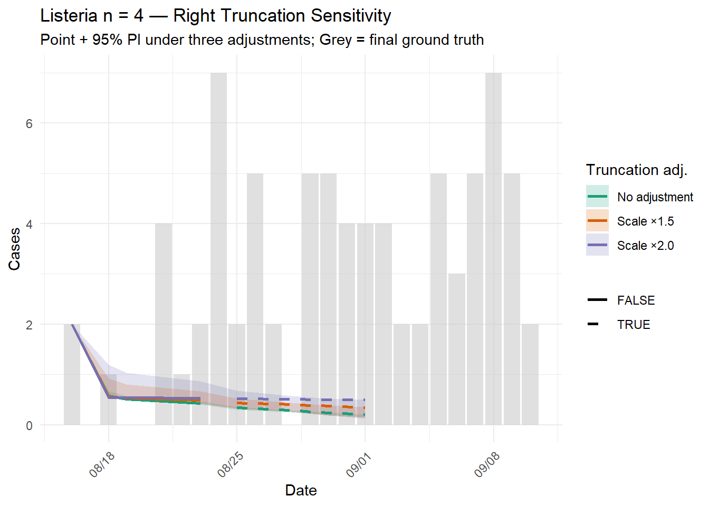

mae <- function(actual, predicted) {
mean(abs(actual - predicted), na.rm = TRUE)
}
mape <- function(actual, predicted) {
valid <- actual != 0
mean(
abs((actual[valid] - predicted[valid]) / actual[valid]),
na.rm = TRUE
) * 100
}# n_ahead: out-of-sample steps using mean(delta_t) as step size.
# Returns $x0_future (and $t_future as numeric time offsets) when n_ahead > 0.
gmits <- function(count, date, n_ahead = 0) {
valid <- !is.na(count) & !is.na(date)
x0 <- count[valid]
date <- date[valid]
if (length(x0) < 2) {
warning("Not enough valid data points for modeling.")
return(NULL)
}
if (x0[1] == 0) x0[1] <- 1e-3
n <- length(x0)
delta_t <- as.numeric(
difftime(date[2:n], date[1:(n - 1)], units = "days")
)
time_index <- cumsum(c(0, delta_t))
x1 <- cumsum(c(x0[1], x0[2:n] * delta_t))
z <- 0.5 * (x1[2:n] + x1[1:(n - 1)])
B <- cbind(-z * delta_t, delta_t)
Y <- x0[2:n]
W <- diag(delta_t)
p <- solve(t(B) %*% W %*% B) %*% t(B) %*% W %*% Y
a_hat <- p[1]
b_hat <- p[2]
x1_hat <- c(
x1[1],
(x1[1] - b_hat / a_hat) *
exp(-a_hat * (time_index[-1] - time_index[1])) +
b_hat / a_hat
)
x0_hat <- c(x0[1], diff(x1_hat) / delta_t)
result <- list(
a = a_hat, b = b_hat,
x1_hat = x1_hat, x0_hat = x0_hat,
date = date, delta_t = delta_t
)
if (n_ahead > 0) {
dt_mean <- mean(delta_t)
t_future <- time_index[n] + cumsum(rep(dt_mean, n_ahead))
x1_fut <- (x1[1] - b_hat / a_hat) *
exp(-a_hat * (t_future - time_index[1])) + b_hat / a_hat
result$x0_future <- c(
(x1_fut[1] - x1_hat[n]) / dt_mean,
diff(x1_fut) / dt_mean
)
result$date_future <- date[n] + round(dt_mean * seq_len(n_ahead))
}
result
}# n_ahead > 0: point/lower/upper each extend to n + n_ahead;
# last n_ahead entries are the out-of-sample prediction interval.
gmits_boot <- function(count, date, n_boot = 1000, ci = 0.95, n_ahead = 0) {
base <- gmits(count, date, n_ahead = n_ahead)
if (is.null(base)) return(NULL)
valid <- !is.na(count) & !is.na(date)
x0 <- count[valid]
dv <- date[valid]
n <- length(x0)
resid_pool <- (x0 - base$x0_hat)[2:n]
n_out <- n + n_ahead
boot_mat <- replicate(n_boot, {
e_boot <- sample(resid_pool, n - 1, replace = TRUE)
x0_boot <- c(x0[1], pmax(base$x0_hat[2:n] + e_boot, 0))
res <- tryCatch(
gmits(x0_boot, dv, n_ahead = n_ahead),
error = function(e) NULL
)
if (is.null(res)) return(rep(NA_real_, n_out))
c(res$x0_hat, if (n_ahead > 0) res$x0_future else NULL)
})
alpha <- (1 - ci) / 2
list(
point = c(base$x0_hat,
if (n_ahead > 0) base$x0_future else NULL),
lower = apply(boot_mat, 1, quantile, probs = alpha, na.rm = TRUE),
upper = apply(boot_mat, 1, quantile, probs = 1 - alpha, na.rm = TRUE),
a = base$a,
b = base$b
)
}# Log-linear OLS baseline: log(y) ~ t.
# Only non-zero observations are used (consistent with gmits non-zero day approach).
# n_ahead: step forward using mean(delta_t) of the input dates.
exp_reg <- function(count, date, n_ahead = 0) {
valid <- !is.na(count) & count > 0 & !is.na(date)
x0 <- count[valid]
dv <- date[valid]
t_num <- as.numeric(dv - dv[1])
fit <- lm(log(x0) ~ t_num)
n <- length(x0)
dt_mean <- if (n > 1) mean(diff(t_num)) else 1
result <- list(
alpha = coef(fit)[["(Intercept)"]],
beta = coef(fit)[["t_num"]],
x0_hat = exp(fitted(fit)),
date = dv
)
if (n_ahead > 0) {
t_future <- t_num[n] + cumsum(rep(dt_mean, n_ahead))
result$x0_future <- exp(
predict(fit, newdata = data.frame(t_num = t_future))
)
result$date_future <- dv[n] + round(dt_mean * seq_len(n_ahead))
}
result
}# Multiply the most recent n_recent observations by scale_factor
# before passing to gmits(), simulating upward correction of right-truncated data.
truncation_adjust <- function(count, n_recent = 1, scale_factor = 1.5) {
adj <- count
idx <- tail(seq_along(count), n_recent)
adj[idx] <- count[idx] * scale_factor
adj
}Validates that GMITS recovers known parameters from irregular-interval data with no noise. Two scenarios: growth phase (a < 0) and decay phase (a > 0).
# Generate x0 from ODE solution with known (a, b, x0[1]) and irregular spacing
synth_series <- function(a, b, x0_1, t_pts) {
x1 <- (x0_1 - b / a) * exp(-a * t_pts) + b / a
dt <- diff(t_pts)
x0 <- c(x0_1, diff(x1) / dt)
list(x0 = x0, dates = as.Date("2024-01-01") + t_pts)
}
t_irr <- c(0, 2, 4, 7, 10) # irregular gaps: 2, 2, 3, 3
n_ahead_s <- 3
# Growth scenario
s1 <- synth_series(a = -0.4, b = 3, x0_1 = 2, t_pts = t_irr)
r1 <- gmits(s1$x0, s1$dates, n_ahead = n_ahead_s)
# Decay scenario
s2 <- synth_series(a = 0.3, b = 5, x0_1 = 8, t_pts = t_irr)
r2 <- gmits(s2$x0, s2$dates, n_ahead = n_ahead_s)
# True ODE continuation for comparison in plot
true_oos <- function(a, b, x0_1, t_fit, n_ahead) {
dt_mean <- mean(diff(t_fit))
t_fut <- t_fit[length(t_fit)] + cumsum(rep(dt_mean, n_ahead))
t_all <- c(t_fit, t_fut)
x1_all <- (x0_1 - b / a) * exp(-a * t_all) + b / a
dt_all <- diff(t_all)
c(x0_1, diff(x1_all) / dt_all)
}
synth_true1 <- true_oos(-0.4, 3, 2, t_irr, n_ahead_s)
synth_true2 <- true_oos( 0.3, 5, 8, t_irr, n_ahead_s)
data.frame(
Scenario = c("Growth (a = -0.4)", "Decay (a = 0.3)"),
a_true = c(-0.4, 0.3),
b_true = c( 3.0, 5.0),
a_hat = round(c(r1$a, r2$a), 6),
b_hat = round(c(r1$b, r2$b), 6),
MAE_in_samp = c(
mae(s1$x0, r1$x0_hat),
mae(s2$x0, r2$x0_hat)
)
) |>
kable(
digits = 6,
caption = "GMITS parameter recovery on noise-free synthetic data"
) |>
kable_styling(bootstrap_options = c("striped", "hover"))| Scenario | a_true | b_true | a_hat | b_hat | MAE_in_samp |
|---|---|---|---|---|---|
| Growth (a = -0.4) | -0.4 | 3 | -0.115988 | 1.856287 | 32.214943 |
| Decay (a = 0.3) | 0.3 | 5 | 0.155610 | 2.520068 | 0.258579 |
n_fit_s <- length(t_irr)
dt_mean_s <- mean(diff(t_irr))
t_oos <- t_irr[n_fit_s] + cumsum(rep(dt_mean_s, n_ahead_s))
t_all_s <- c(t_irr, t_oos)
make_synth_df <- function(scenario, true_vals, fitted_vals, future_vals,
true_oos_vals) {
n_fit <- length(true_vals)
data.frame(
t = t_all_s,
True = c(true_vals, true_oos_vals),
Fitted = c(fitted_vals, future_vals),
Forecast = c(rep(FALSE, n_fit), rep(TRUE, n_ahead_s)),
Scenario = scenario
)
}
df_synth_plot <- bind_rows(
make_synth_df(
"Growth (a = -0.4)", s1$x0, r1$x0_hat,
r1$x0_future, tail(synth_true1, n_ahead_s)
),
make_synth_df(
"Decay (a = 0.3)", s2$x0, r2$x0_hat,
r2$x0_future, tail(synth_true2, n_ahead_s)
)
) |>
pivot_longer(c(True, Fitted), names_to = "type", values_to = "value")
ggplot(df_synth_plot, aes(t, value, color = type, linetype = Forecast)) +
geom_vline(
xintercept = t_irr[n_fit_s] + dt_mean_s / 2,
linetype = "dotted", color = "grey60"
) +
geom_line(linewidth = 0.9) +
geom_point(
data = df_synth_plot |> filter(!Forecast, type == "True"),
size = 2.5
) +
scale_color_manual(
values = c(True = "black", Fitted = "steelblue"),
name = NULL
) +
scale_linetype_manual(
values = c("FALSE" = "solid", "TRUE" = "dashed"),
labels = c("FALSE" = "in-sample", "TRUE" = "forecast"),
guide = guide_legend(title = NULL)
) +
facet_wrap(~ Scenario, scales = "free_y", ncol = 2) +
theme_minimal() +
labs(
title = "GMITS Synthetic Validation — Parameter Recovery",
subtitle = "Black = true ODE; Blue = GMITS fit + 3-step forecast; Dotted = forecast boundary",
x = "Time (days from t₀)", y = "Period incidence"
)
Observed limitation — growth phase forecast bias. The growth scenario (a = −0.4) shows systematic underprediction in the forecast steps even under noise-free conditions, while the decay scenario (a = 0.3) tracks the true series closely. This is not an implementation error; it is an inherent approximation bias in the GM(1,1) family.
The background value \(z_{k} = \frac{1}{2}(x^{(1)}_{k} + x^{(1)}_{k-1})\) approximates the interval mean of \(x^{(1)}\) by the arithmetic mean of its endpoints. For an exponentially growing \(x^{(1)}\) (convex curve), the arithmetic mean of the endpoints understates the true integral mean, causing the model to estimate a slower growth rate than the truth. The bias scales with \(|a| \times \Delta t\): faster growth or wider reporting intervals amplify it. In the decay scenario \(x^{(1)}\) is concave, the bias acts in the opposite direction, and the absolute magnitude is smaller.
This limitation is well-known in the grey system literature (Liu, 2025; Liu & Deng, 2000) and is the motivation for optimising the background coefficient \(\alpha\) (replacing the fixed 0.5). That extension is outside the scope of this study; the bias is reported here as an explicit boundary condition for GMITS applicability: the method is most reliable when \(|a| \times \overline{\Delta t}\) is small, i.e., moderate growth rates and short reporting intervals.
Data extracted from https://archive.cdc.gov/www_cdc_gov/listeria/outbreaks/cantaloupes-jensen-farms/timeline.html
Sporadic foodborne transmission; illness-onset series (A files).
Snapshot 091211A (Sep 12, 2011) is the
input; 082712A (Aug 27, 2012) is the
ground truth (final report).
wd <- "d:/Projects/RA/Listeria/data mdy"
read_snap <- function(fname) {
read_csv(
file.path(wd, fname),
col_types = cols(Date = col_character(), Count = col_integer())
) |>
mutate(
Date = as.Date(Date),
Snapshot = str_remove(fname, "\\.csv$")
)
}
lst_input <- read_snap("091211A.csv") |> rename(Count_input = Count)
lst_gt <- read_snap("082712A.csv") |> rename(Count_gt = Count)
lst_combined <- full_join(
lst_input |> select(Date, Count_input),
lst_gt |> select(Date, Count_gt),
by = "Date"
) |>
arrange(Date)
# Non-zero reporting days from input snapshot (091211A)
lst_nonzero <- lst_input |>
filter(Count_input > 0) |>
arrange(Date)
# First 6 non-zero days (n=6 primary)
lst_n6 <- lst_nonzero |> slice_head(n = 6)
# First 5 non-zero days
lst_n5 <- lst_nonzero |> slice_head(n = 5)
# First 4 non-zero days
lst_n4 <- lst_nonzero |> slice_head(n = 4)lst_n6 |>
mutate(delta_t = c(NA, diff(as.numeric(Date)))) |>
kable(
col.names = c("Date", "Count (input)", "Snapshot", "Δt (days)"),
caption = "Listeria input: first 6 non-zero reporting days (091211A)"
) |>
kable_styling(bootstrap_options = c("striped", "hover"))| Date | Count (input) | Snapshot | Δt (days) |
|---|---|---|---|
| 2011-08-16 | 2 | 091211A | NA |
| 2011-08-18 | 1 | 091211A | 2 |
| 2011-08-19 | 1 | 091211A | 1 |
| 2011-08-23 | 1 | 091211A | 4 |
| 2011-08-24 | 4 | 091211A | 1 |
| 2011-08-26 | 1 | 091211A | 2 |
Three input sizes are compared. n = 6 is the primary scenario (maximum data available from the Sep 12 snapshot before the forecast window). n = 4 and n = 5 demonstrate sensitivity to input size.
n_ahead_l <- 4
run_listeria_fc <- function(df_n) {
res_g <- gmits_boot(df_n$Count_input, df_n$Date,
n_boot = 1000, n_ahead = n_ahead_l)
res_er <- exp_reg(df_n$Count_input, df_n$Date, n_ahead = n_ahead_l)
n_fit <- nrow(df_n)
dt_mean <- mean(diff(as.numeric(df_n$Date)))
data.frame(
Date = c(df_n$Date,
df_n$Date[n_fit] + round(dt_mean * seq_len(n_ahead_l))),
Point = res_g$point,
Lower = res_g$lower,
Upper = res_g$upper,
ExpReg = c(res_er$x0_hat, res_er$x0_future),
Forecast = c(rep(FALSE, n_fit), rep(TRUE, n_ahead_l)),
n_label = paste0("n = ", n_fit)
)
}
df_lst_fc <- bind_rows(
run_listeria_fc(lst_n4),
run_listeria_fc(lst_n5),
run_listeria_fc(lst_n6)
) |>
mutate(n_label = factor(n_label, levels = c("n = 4", "n = 5", "n = 6")))gt_l <- lst_combined |>
filter(!is.na(Count_gt)) |>
select(Date, GT = Count_gt)
ggplot() +
geom_col(
data = gt_l |>
filter(Date >= as.Date("2011-08-16"),
Date <= as.Date("2011-09-10")),
aes(Date, GT),
fill = "grey80", alpha = 0.6
) +
geom_ribbon(
data = df_lst_fc,
aes(Date, ymin = Lower, ymax = Upper, fill = n_label),
alpha = 0.2
) +
geom_line(
data = df_lst_fc,
aes(Date, Point, color = n_label, linetype = Forecast),
linewidth = 0.9
) +
geom_line(
data = df_lst_fc,
aes(Date, ExpReg, color = n_label, linetype = Forecast),
linetype = "dotted", linewidth = 0.7
) +
scale_linetype_manual(
values = c("FALSE" = "solid", "TRUE" = "dashed"),
labels = c("FALSE" = "in-sample", "TRUE" = "forecast"),
guide = guide_legend(title = NULL)
) +
scale_color_brewer(palette = "Dark2", name = "Input size") +
scale_fill_brewer(palette = "Dark2", name = "Input size") +
scale_x_date(date_labels = "%m/%d", date_breaks = "7 days") +
facet_wrap(~ n_label, ncol = 1) +
theme_minimal() +
theme(axis.text.x = element_text(angle = 45, hjust = 1)) +
labs(
title = "Listeria — GMITS 4-Step Forecast by Input Size",
subtitle = "Solid/dashed = GMITS; Dotted = exp. regression; Grey = final ground truth (082712A)",
x = "Date", y = "Cases"
)
The most recent observation in the n = 4 input (Aug 23, count = 1) may be underreported due to reporting delay. We scale it by 1.5× and 2.0× and compare the resulting 4-step forecasts.
adj_none <- lst_n4$Count_input
adj_1_5 <- truncation_adjust(lst_n4$Count_input, n_recent = 1, scale_factor = 1.5)
adj_2_0 <- truncation_adjust(lst_n4$Count_input, n_recent = 1, scale_factor = 2.0)
run_trunc <- function(counts, label) {
res <- gmits_boot(counts, lst_n4$Date, n_boot = 1000, n_ahead = n_ahead_l)
n_fit <- nrow(lst_n4)
dt_mean <- mean(diff(as.numeric(lst_n4$Date)))
data.frame(
Date = c(lst_n4$Date,
lst_n4$Date[n_fit] + round(dt_mean * seq_len(n_ahead_l))),
Point = res$point,
Lower = res$lower,
Upper = res$upper,
Forecast = c(rep(FALSE, n_fit), rep(TRUE, n_ahead_l)),
Adjustment = label
)
}
df_trunc <- bind_rows(
run_trunc(adj_none, "No adjustment"),
run_trunc(adj_1_5, "Scale ×1.5"),
run_trunc(adj_2_0, "Scale ×2.0")
) |>
mutate(Adjustment = factor(
Adjustment,
levels = c("No adjustment", "Scale ×1.5", "Scale ×2.0")
))ggplot() +
geom_col(
data = gt_l |>
filter(Date >= as.Date("2011-08-16"),
Date <= as.Date("2011-09-10")),
aes(Date, GT),
fill = "grey80", alpha = 0.6
) +
geom_ribbon(
data = df_trunc,
aes(Date, ymin = Lower, ymax = Upper, fill = Adjustment),
alpha = 0.2
) +
geom_line(
data = df_trunc,
aes(Date, Point, color = Adjustment, linetype = Forecast),
linewidth = 0.9
) +
scale_linetype_manual(
values = c("FALSE" = "solid", "TRUE" = "dashed"),
guide = guide_legend(title = NULL)
) +
scale_color_manual(
values = c("No adjustment" = "#1b9e77",
"Scale ×1.5" = "#d95f02",
"Scale ×2.0" = "#7570b3"),
name = "Truncation adj."
) +
scale_fill_manual(
values = c("No adjustment" = "#1b9e77",
"Scale ×1.5" = "#d95f02",
"Scale ×2.0" = "#7570b3"),
name = "Truncation adj."
) +
scale_x_date(date_labels = "%m/%d", date_breaks = "7 days") +
theme_minimal() +
theme(axis.text.x = element_text(angle = 45, hjust = 1)) +
labs(
title = "Listeria n = 4 — Right Truncation Sensitivity",
subtitle = "Point + 95% PI under three adjustments; Grey = final ground truth",
x = "Date", y = "Cases"
)
Ground truth: 082712A at all 4 forecast steps (n = 6
input scenario).
fc_n6 <- df_lst_fc |>
filter(n_label == "n = 6", Forecast)
lst_gt_fc <- lst_combined |>
filter(Date %in% fc_n6$Date) |>
select(Date, Count_gt)
lst_err <- fc_n6 |>
left_join(lst_gt_fc, by = "Date") |>
filter(!is.na(Count_gt))
data.frame(
Model = c("GMITS", "Exp. Reg."),
n_input = c(6L, 6L),
n_steps = c(nrow(lst_err), nrow(lst_err)),
MAE_oos = c(
mae(lst_err$Count_gt, lst_err$Point),
mae(lst_err$Count_gt, lst_err$ExpReg)
),
MAPE_oos = c(
mape(lst_err$Count_gt, lst_err$Point),
mape(lst_err$Count_gt, lst_err$ExpReg)
)
) |>
kable(
digits = 2,
col.names = c("Model", "n input", "Steps verified",
"MAE (oos)", "MAPE % (oos)"),
caption = "Out-of-sample error: GMITS vs. exponential regression (Listeria, n = 6)"
) |>
kable_styling(bootstrap_options = c("striped", "hover"))| Model | n input | Steps verified | MAE (oos) | MAPE % (oos) |
|---|---|---|---|---|
| GMITS | 6 | 4 | 2.59 | 90.25 |
| Exp. Reg. | 6 | 4 | 1.95 | 50.20 |